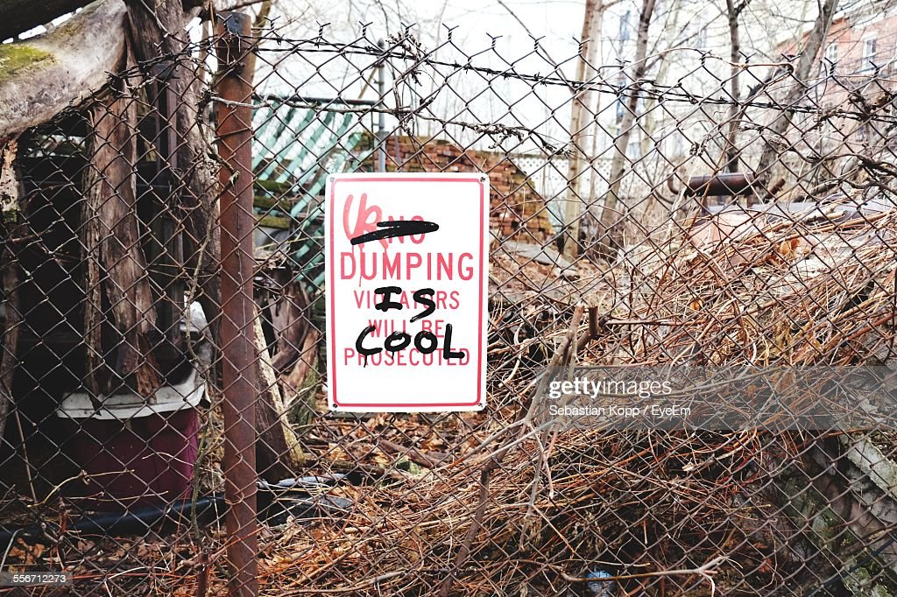
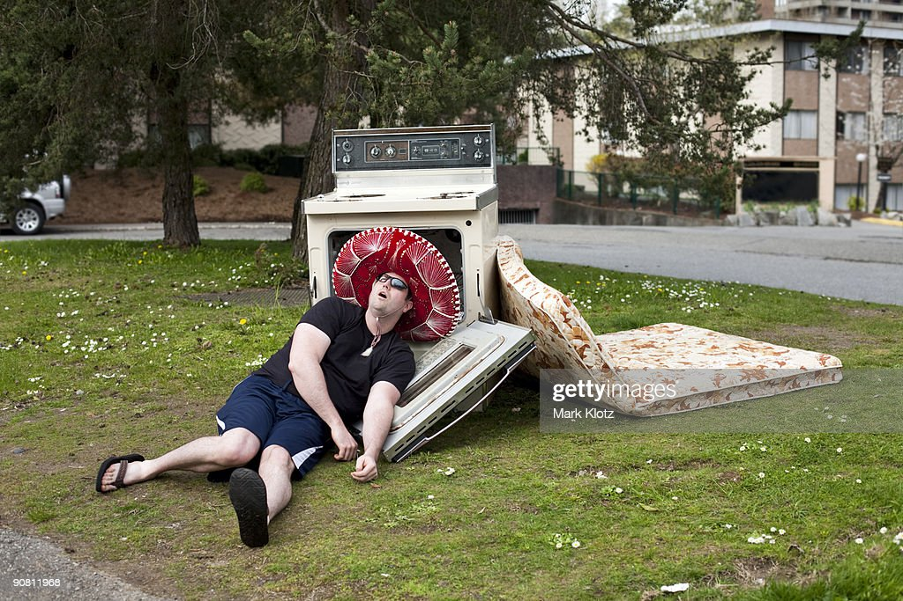
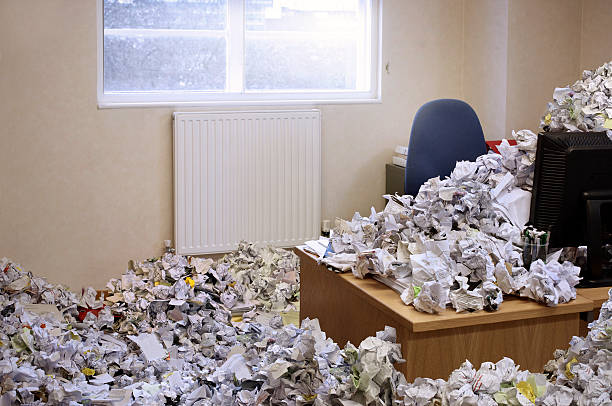
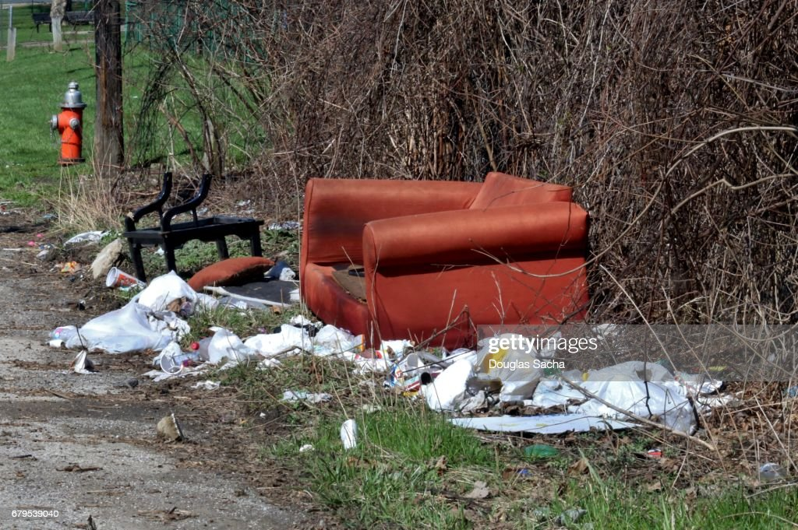

Timothée Chalamet, a Facilities Managment employee, hiding in a trash can looking for students to throw trash at.
By Ian Dalrymple, Evon Salmeron, Sarah Siock, Abby Wallace
April 13, 2023, 7:00 PM
The University of Maryland is a very trashy place full of dirty garbage and waste. Students don’t know how to recycle and Facilities Management have had enough.
How many recycling bins are on campus? Well if you ask the students at University of Maryland, they'll just meet you with a face of confusion mixed with general uninterest.
“Why the hell should I care about recycling?” said Edward Cullen, junior journalism major. “I just want to throw my trash away and get back to my bike. I love my bike.”
And that’s the problem. UMD students don’t know the difference between trash and recycling. They throw trash in the recycling bin and recyclable material in the trash, rendering both useless.
The bins can’t be properly disposed of because they have the wrong materials in them. Because of this complication, Facilities Management said they had no choice but to dump it all on the sidewalks of campus.
Students witness piles of trash like this all around the campus.
A graffiti sign defaced by students.
A student passed out surrounded by trash.
Facilities Management office filled with trash.
Student's couch sits on Regents Drive.
Students lay tribute to "The War" by leaving banana peels on fences.
The University of Maryland is a very trashy place full of dirty garbage and waste. Students don’t know how to recycle and Facilities Management have had enough.
How many recycling bins are on campus? Well if you ask the students at University of Maryland, they'll just meet you with a face of confusion mixed with general uninterest.
“Why the hell should I care about recycling?” said Edward Cullen, junior journalism major. “I just want to throw my trash away and get back to my bike. I love my bike.”
And that’s the problem. UMD students don’t know the difference between trash and recycling. They throw trash in the recycling bin and recyclable material in the trash, rendering both useless.
The bins can’t be properly disposed of because they have the wrong materials in them. Because of this complication, Facilities Management said they had no choice but to dump it all on the sidewalks of campus.